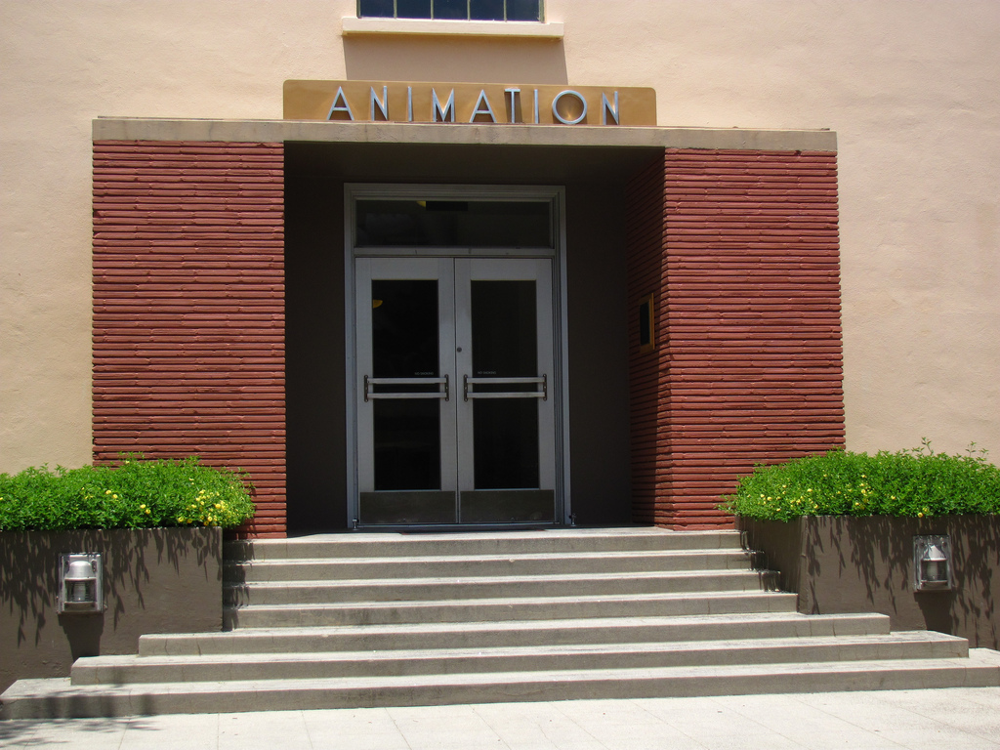

Try Your Druck was founded by Yoko Nui. Built-in January 1985 in New York, Brooklyn.
"Here at Try Your Druck We Try to have a creative enviroment where we can all come together and create something magicial"-Yoko Nui December 12,1985
Location
Brooklyn NY, 78 Bayridge, 89th Street 11209
Hours
10 am to 7 pm Weekdays, 11 am to 6 pm Weekends
